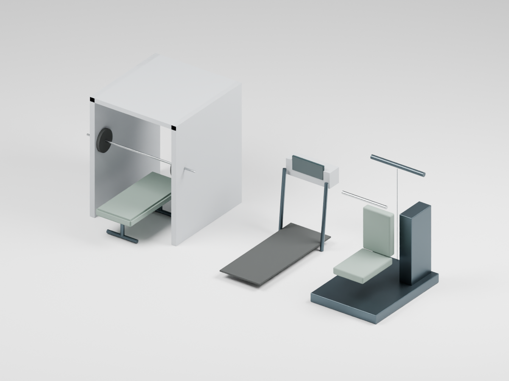
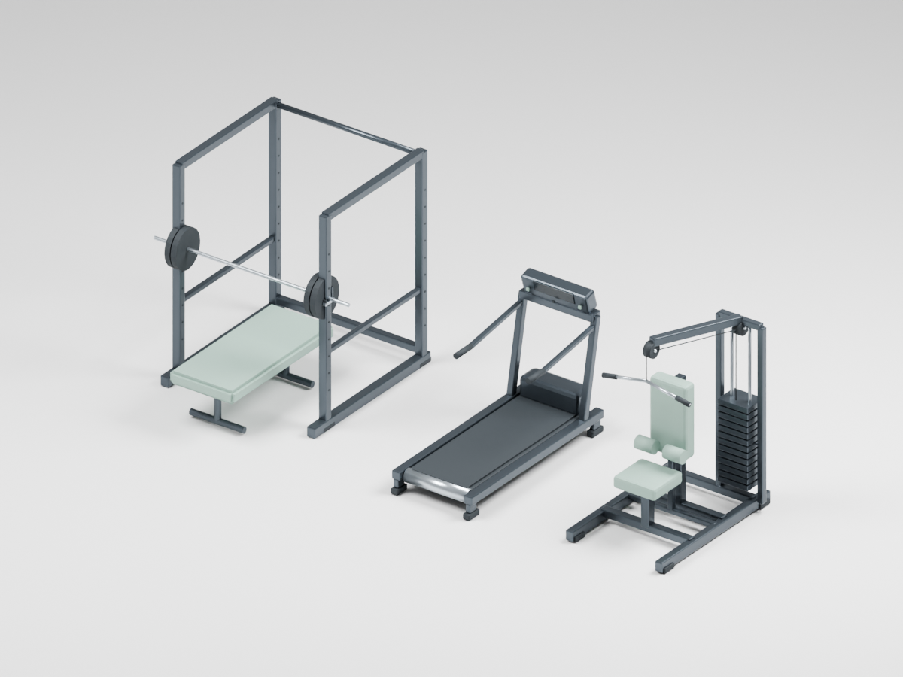
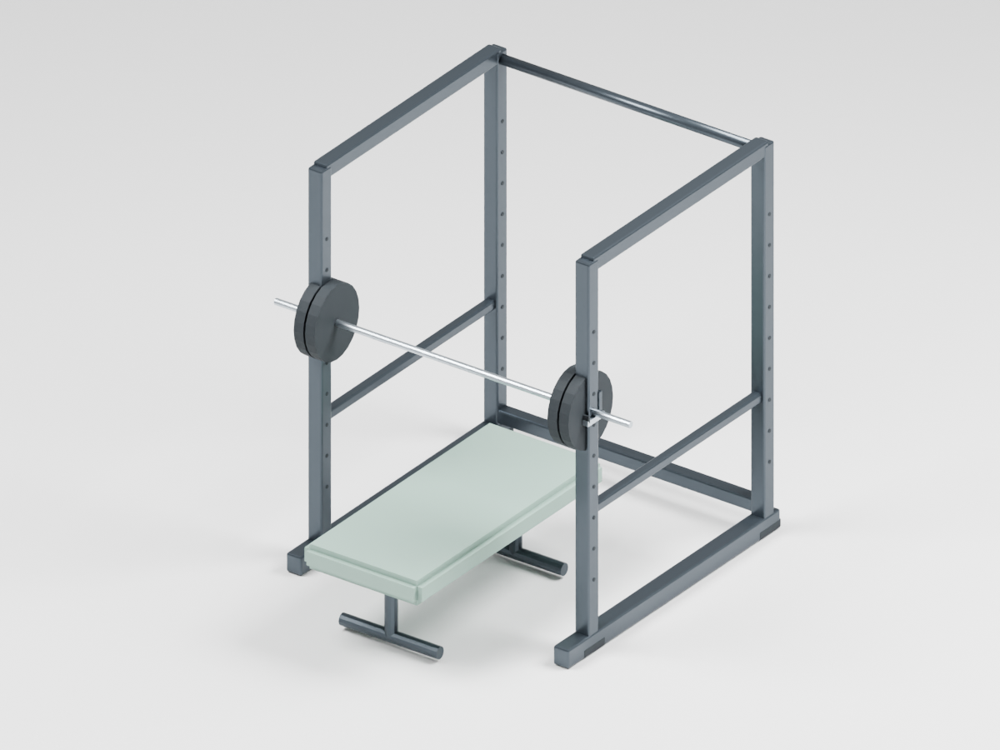
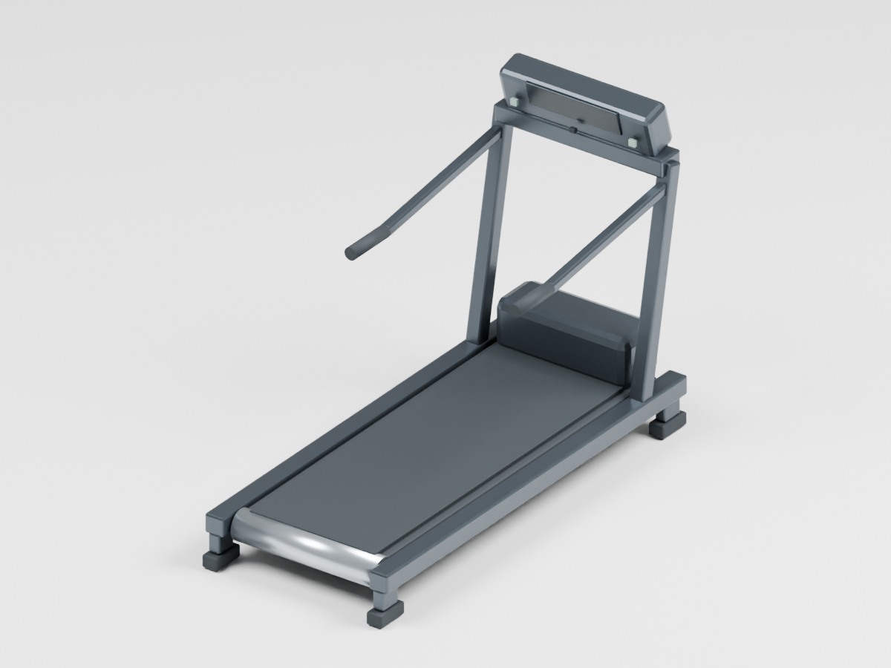
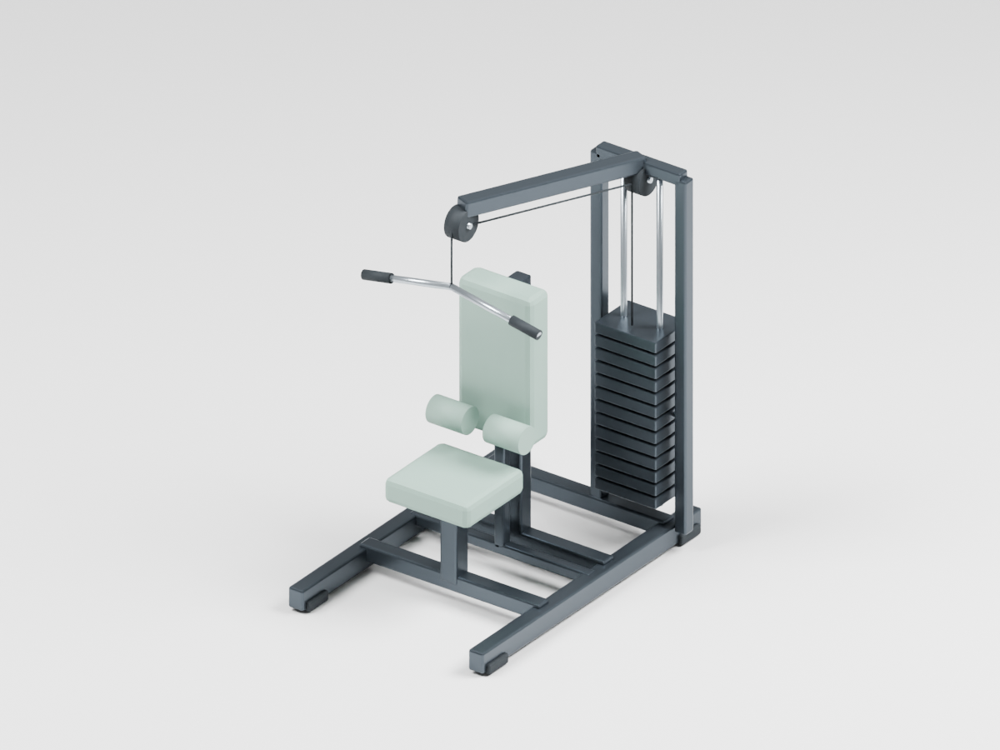
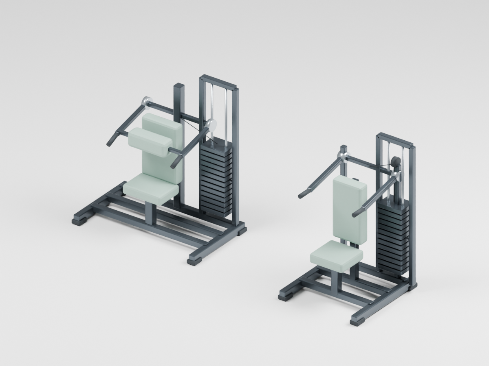

CampusCenter equipment · EQ27 R01
14 editable assemblies: six treadmills, five rack stations, core, pulldown and shoulder press. Approved world positions and traced footprints retained. All unspecified dimensions and mechanics are estimates.
Editable Blender source · All replacement assemblies · Complete legacy fitness actor replacement · Audit and integration instructions

B05 schematic donorsSolid rack side panels, minimal treadmill and generic pulldown shape.

EQ27 assembliesOpen supported rack, complete treadmill frame and cable/weight-stack pulldown.

Rack and retained benchFive stations use unchanged corrected B05 benches and loaded shafts with two supporting ledges.

TreadmillBelt, deck crossmembers, rollers, leveling supports, handrails and blank console.

PulldownGuided individual weight plates, overhead pulleys and continuous cable route; supported seat and thigh pads.

Core and shoulder pressDistinct chest pad/pivot and press arm assemblies; supported bases and seats.
Exact replacement IDs
| Plan marker | Equipment | New assembly | Parts |
|---|
| PH02_Fitness218_003 | Treadmill | EQ27_PH02_Fitness218_003 | 29 |
| PH02_Fitness218_004 | Treadmill | EQ27_PH02_Fitness218_004 | 29 |
| PH02_Fitness218_005 | Treadmill | EQ27_PH02_Fitness218_005 | 29 |
| PH02_Fitness218_006 | Treadmill | EQ27_PH02_Fitness218_006 | 29 |
| PH02_Fitness218_007 | Treadmill | EQ27_PH02_Fitness218_007 | 29 |
| PH02_Fitness218_008 | Treadmill | EQ27_PH02_Fitness218_008 | 29 |
| PH02_Fitness218_009 | Squat Rack / Shoulder Press | EQ27_PH02_Fitness218_009 | 59 |
| PH02_Fitness218_011 | Squat Rack / Shoulder Press | EQ27_PH02_Fitness218_011 | 59 |
| PH02_Fitness218_013 | Squat Rack / Shoulder Press | EQ27_PH02_Fitness218_013 | 59 |
| PH02_Fitness218_015 | Squat Rack / Shoulder Press | EQ27_PH02_Fitness218_015 | 59 |
| PH02_Fitness218_017 | Squat Rack / Shoulder Press | EQ27_PH02_Fitness218_017 | 59 |
| PH02_Fitness218_027 | Core Machine | EQ27_PH02_Fitness218_027 | 43 |
| PH02_Fitness218_029 | Nautilus Pulldown | EQ27_PH02_Fitness218_029 | 48 |
| PH02_Fitness218_030 | Shoulder Press | EQ27_PH02_Fitness218_030 | 44 |
Compatibility and preservation
20 exports reopened successfully; source and imported world bounds match within 0.01 mm. Seven bench donors match B05 geometry exactly. Two standalone benches have no loaded bars; all five rack shafts have two supporting ledges. Source mesh components are closed. Exports have no external texture dependencies.
B05 and Desktop R21 Support hashes remain unchanged. Native collision/traversal checks are pending isolated Unreal integration. Preserve complex-as-simple collision and Query and Physics; bind materials by name using the exact compatibility mapping.
Replacement manifest · Export and support checks · Frozen source integrity · Equipment inventory